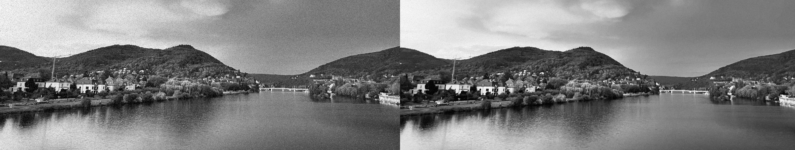
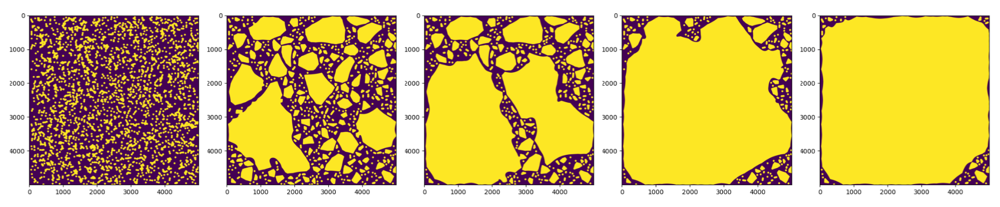
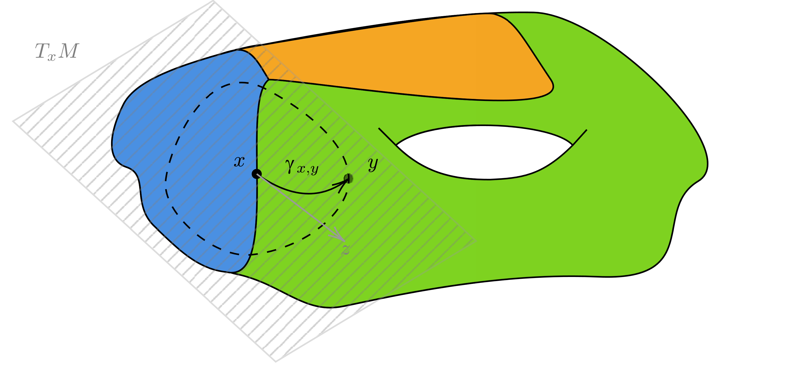
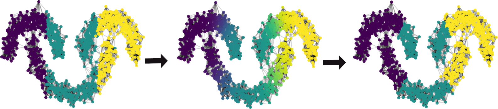

Research
An overview of my research projects and publications. Click on a project to learn more.
2026 Generic Mean Curvature Flow With Rough Weights
Abstract: We prove the generic existence of mean curvature flows in spaces with rough weights. Our weak solutions are both unit-density Brakke flows and distributional solutions. Such a generic statement is optimal in the sense that we consider weights that are too rough to have well-defined traces on every hypersurface.
Motivation: In data science, one is often interested in finding groups of similar data points. Assuming that the data points are distributed according to a density, one searches for cuts through the data that pass through regions of low density. Weighted mean curvature flow, where the weight is the density of the data, can be used to find such cuts while additionally preventing them from oscillating. In this paper, we determine which regularity of the weight is needed for the weighted mean curvature to remain well-defined. In some sense, this answers which assumptions on the data are needed to find good clusterings with weighted mean curvature flow.
Methods: We show existence in the level-set formulation of weighted mean curvature flow. To this end, we show that an adaptation of the Evans–Spruck [1995] approximation converges. We use a maximum principle argument to establish a uniform gradient bound, and we identify that this gradient bound holds if and only if the density is log-concave. With the gradient bound at hand, we use a compensated compactness argument to pass to the limit. Finally, we use a co-area argument to show that almost every level set is a weak solution to weighted mean curvature flow.
2026 Strong Convergence of Continuous Median Filter Scheme
Abstract: We introduce a continuous-time counterpart of the median filter that gradually denoises a given image. In the limit of vanishing stencil size, our results show that the evolution converges to level-set mean curvature flow. Surprisingly, and for the first time for any median-type filter scheme, we can prove the convergence of energies in this limit. Such strong convergence results are of major interest, as they often have to be assumed in the literature to prove convergence of related schemes. Moreover, this result carries crucial geometric information, namely the unit multiplicity of interfaces. The proof relies on a compensated compactness argument inspired by the work of Evans and Spruck.
Motivation: In the literature on the convergence of approximations to multiphase mean curvature flow, an energy convergence assumption is often needed. Whether this assumption is true or necessary is still an open question. For the MBO scheme, it is only known to hold in the mean-convex case [Fuchs–Laux 2024] or until singularities appear [Swartz–Yip 2017]. We are interested in whether the energies converge for generic initial conditions. By slightly adapting the scheme, we can give a positive answer.
Methods: We decouple the time and length scales in the median filter scheme and investigate the case where the time scale is much smaller than the length scale. We show that the associated approximate mean curvature satisfies an L1 bound. This allows for a compensated compactness argument to pass to the limit in the energy. To rigorously prove the L1 bound, we need to approximate the median scheme by a regularized version.

2025 Obstacle Mean Curvature Flow: Efficient Approximation and Convergence Analysis
Abstract: We introduce a simple and efficient numerical method to compute mean curvature flow with obstacles. The method augments the Merriman–Bence–Osher scheme with a pointwise update that enforces the constraint and therefore retains the computational complexity of the original scheme. Remarkably, this naive scheme inherits both crucial structural properties of obstacle mean curvature flow: a geometric comparison principle and a minimizing movements interpretation. The latter immediately implies the unconditional stability of the scheme. Based on the comparison principle, we prove the convergence of the scheme to the viscosity solution of obstacle mean curvature flow. Moreover, using the minimizing movements interpretation, we show convergence of a spatially discrete model. Finally, we present numerical experiments for a physical model that inspired this work.
Motivation: Invasion processes occur frequently in nature. A simple model for them is mean curvature flow with obstacles, which can describe, for example, a detaching membrane or the spread of a wildfire. We introduced this scheme to have a very simple and easy-to-implement method for approximating such phenomena.
Methods: We use the classical principle for proving convergence to viscosity solutions: monotonicity + consistency + stability = convergence. Monotonicity is natural for our scheme. Consistency and stability are similar to Barles–Georgelin [1995] and only have to be checked pointwise. As our scheme is exact on the obstacles, consistency there is essentially immediate.

2025 Weighted, Multiphase, Volume-preserving Mean Curvature Flow as Limit of the MBO Scheme on Manifolds
Abstract: The famous thresholding scheme by Merriman, Bence, and Osher (Motion of multiple junctions: A level set approach. Journal of Computational Physics 112.2 (1994): 334-363.) has proven to be a very efficient time discretization of mean curvature flow. The present paper studies a multiphase, volume-constrained version on a weighted manifold that naturally arises in the context of data science. The main result of this work proves convergence to multiphase, weighted, volume-preserving mean curvature flow on a smooth, closed manifold. The proof is only conditional in the sense that convergence of the approximating energy to the weighted perimeter is assumed. These types of assumptions are natural and common in the literature. The proof shows convergence in the energy dissipation inequality, induced by the underlying gradient flow structure, similar to the work of Laux and Otto (The thresholding scheme for mean curvature flow and De Giorgi’s ideas for minimizing movements. The Role of Metrics in the Theory of Partial Differential Equations 85 (2020): 63-94.). This leads to a new De Giorgi solution concept that describes the limiting flow weakly. Estimates regarding the derivatives of the heat kernel are developed in order to pass to the limit in the variations of the energy and metric.
Motivation: In a previous work, we introduced a volume-preserving MBO scheme to find clusters in data sets. This work shows that the algorithm approximates volume-preserving mean curvature flow, which is important because it shows that the scheme can find approximations of minimal surfaces. In the continuous setting, the limiting minimal surfaces are the cluster boundaries: they cut the data where it has the lowest density while avoiding oscillations thanks to the controlled curvature. The setting of this work is that data points are sampled from a smooth density on a smooth, weighted manifold. This assumption reflects that, although the data may live in a high-dimensional space (think of images, where every pixel is a dimension), similar data points have only a few degrees of freedom and are thus low-dimensional.
Methods: We use De Giorgi's ideas on the minimizing movement scheme: the variational interpolation yields the right energy dissipation inequality, in which we pass to the limit. This is done by computing the first and second variations of the energy and metric, respectively. One then needs good control of the derivatives of the heat kernel, as they appear in the variations.

2024 An Efficient Volume-preserving MBO Scheme for Data Clustering and Classification
Abstract: We propose and study a novel efficient algorithm for clustering and classification tasks based on the famous MBO scheme. On the one hand, inspired by Jacobs et al. [J. Comp. Phys. 2018], we introduce constraints on the size of clusters, leading to a linear integer problem. We prove that the solution to this problem is induced by a novel order statistic. This viewpoint allows us to develop exact and highly efficient algorithms to solve such constrained integer problems. On the other hand, we prove an estimate of the computational complexity of our scheme, which is better than any provable bound available for the state of the art. This rigorous analysis is based on a variational viewpoint that connects this scheme to volume-preserving mean curvature flow in the big data and small time-step limit.
Motivation: Given a graph, the clustering task is to find groups of nodes such that the number of edges within a group is maximal and the number of edges between groups is minimal. This is equivalent to minimizing the graph-cut energy, which counts the edges between the groups. However, this problem is NP-hard, so it cannot be solved efficiently in general. The MBO scheme locally minimizes a relaxation of the graph-cut energy, which makes it a simple but efficient clustering method. In addition, one often knows roughly how many data points should be in each cluster; this extra information can be used to improve the clustering accuracy of the MBO scheme. This was previously suggested by Jacobs et al. [2018], but they used a black-box algorithm to solve the underlying optimization problem. We want to better understand this optimization problem and its geometric implications.
Methods: We characterize the Lagrange multiplier associated with the volume constraint as the minimizer of an asymmetric L1-type norm. A minimizer of an L1 norm is a median, as can be seen from the Euler–Lagrange equation. We use this geometric insight to construct an algorithm that is guaranteed to decrease the violation of the volume constraint by a fixed amount. The algorithm is, in a sense, a kind of gradient descent on the volume discrepancy. The variational viewpoint also allows us to use Gamma-convergence to pass to the limit in the Lagrange multiplier and determine the big data limit. Furthermore, we obtain an L2 estimate in time on the Lagrange multiplier by carefully testing and estimating the first variation of the energy and metric arising from the underlying gradient flow structure.

2024 Variational Poisson Denoising via Augmented Lagrangian Methods
Abstract: In this paper, we denoise a given noisy image by minimizing a smoothness-promoting function over a set of local similarity measures, which compare the mean of the given image and some candidate image on a large collection of subboxes. The associated convex optimization problem possesses a huge number of constraints, which are induced by extended real-valued functions stemming from the Kullback–Leibler divergence. Alternatively, these nonlinear constraints can be reformulated as affine ones, which makes the model seemingly more tractable. For the numerical treatment of both formulations of the model (i.e., the original one as well as the one with affine constraints), we propose a rather general augmented Lagrangian method which is capable of handling the huge number of constraints. A self-contained, derivative-free, global convergence theory is provided, allowing an extension to other problem classes. For the solution of the resulting subproblems in the setting of our suggested image denoising models, we make use of a suitable stochastic gradient method. Results of several numerical experiments are presented in order to compare both formulations and the associated augmented Lagrangian methods.
Motivation: Denoising an image is an ill-posed task: there are many plausible reconstructions, but there is no way to determine the original data. We use statistical hypothesis tests on a huge number of test boxes to determine whether the noisy image is likely to originate from a given candidate reconstruction. This is our data-fidelity term; adding a regularizer yields an optimization problem with many constraints. The advantage is that one can give statistical guarantees on the regularity of the reconstruction relative to the original data.
Methods: To solve the optimization problem, we use an augmented Lagrangian method. Due to the redundancy among the many test boxes, we use stochastic gradient descent to solve the subproblems.